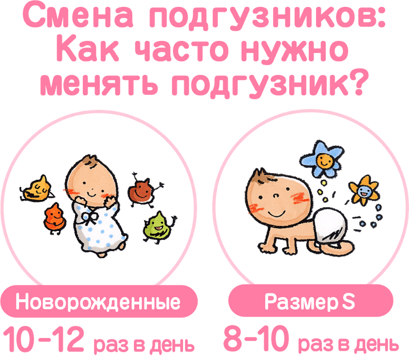
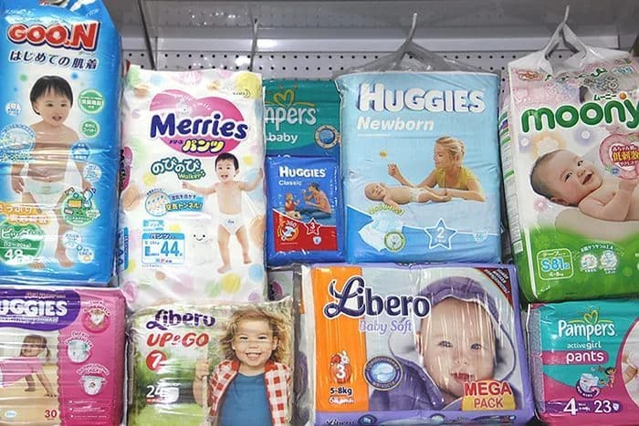
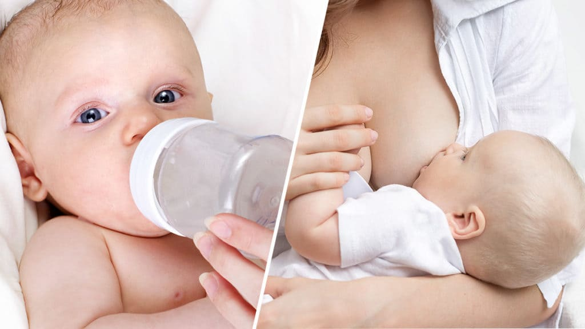
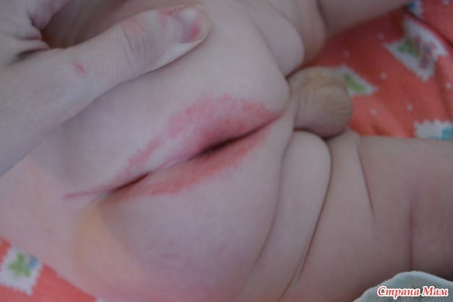
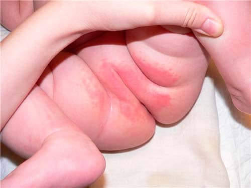
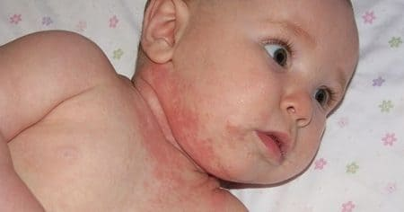
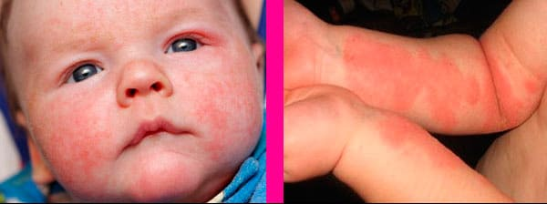
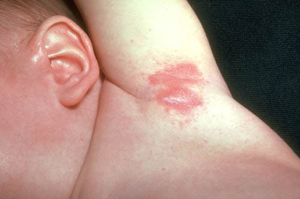

Внимательно рассмотрите чистую, не тронутую никакими болячками попку своего ребенка. В течение следующего года ее цвет, возможно, уже никогда не будет таким ровным. Стоит только начать заворачивать ребенка в подгузники, раздражения не заставят себя долго ждать. Подгузники и кожа просто не могут без трений. Чтобы защитить окружающие предметы от детских экскрементов, были придуманы подгузники – а кожа ребенка восстает против потери своей свободы дышать свежим воздухом и наслаждаться солнечным светом.
Откуда берутся раздражения? Сначала возьмите очень чувствительную кожу, добавьте химические вещества, содержащиеся в моче и кале, закупорьте этот участок большой «повязкой» и трите все это вместе. Готово! Вот вы и получили раздражение от подгузника. Подержите эту смесь достаточно долго, и бактерии на пару с грибками начнут размножаться в ослабленной коже, и у вас будет еще более сильное раздражение, с опрелостями и высыпаниями.
Чрезмерная влажность на чувствительной коже – вот главный виновник раздражений от подгузников. Избыток влаги лишает кожу естественной сальной смазки, кроме того, мокрая кожа легче повреждается трением. Как только кожа раздражена чрезмерной влажностью, она больше не может служить надежным природным барьером. Ослабленную кожу атакуют бактерии и грибки, приводя к более тяжелым и долго не заживающим повреждениям. Маленькие дети имеют множество жировых складок в паховой области. Трение этих влажных кожных складок и является причиной того, что наиболее часто раздражения отмечаются именно в паховых углублениях.
Как только кожа привыкает к сырости, твердая пища, вводимая в рацион ребенка, поставляет другие химические раздражители, и попка ребенка немедленно реагирует на то, что что-то изменилось на другом конце.
Не принимайте раздражение слишком близко к сердцу. «Но я же переодеваю его всякий раз, как он описается», – часто говорят матери, оправдываясь за то, что у их детей никак не проходит раздражение. Даже у родителей, которые очень внимательно относятся к смене подгузников, дети страдают от раздражения на попке.
Но вот способы облегчить положение.
Меняйте чаще. Исследования показали, что у детей, которым меняют подгузник как минимум восемь раз в день, реже возникают пеленочные раздражения.

Попробуйте разные типы подгузников. Хотя обе стороны трубят о своей победе над опрелостями и сыпью, попробуйте и тканевые, и одноразовые подгузники различных марок, чтобы посмотреть, какие вызывают меньше всего раздражений.

Выполаскивайте из подгузников раздражители. Если стираете подгузники сами, для удаления остатков мыла и алкалиновых раздражителей подливайте перед началом цикла полоскания половину стакана уксуса. Вы можете также требовать этой обработки от своей службы стирки подгузников.
Подмывайте или вытирайте хорошенько. Во время каждой смены подгузника подмывайте попку ребенка, особенно если подгузник насквозь промок или вы чувствуете запах аммиака. Поэкспериментируйте, чтобы найти вариант, который подходит попке вашего ребенка лучше всего. Чувствительная кожа лучше всего переносит простую воду; иногда требуется мягкое мыло. Некоторые чувствительные попки восстают против химикатов в одноразовых детских салфетках с пропиткой, особенно содержащих спирт; другие попки принимают их без всякого раздражения. Пробуйте разные салфетки, пока не найдете те, которые хорошо подходят. Кожа на ягодицах некоторых малышей любит быть совершенно «голенькой» и дышать. У других раздражений меньше, если покрывать кожу защитным кремом.
Вытирайте осторожно. Насухо промокайте мягким полотенцем или чистым хлопчатобумажным подгузником. Никогда не нужно сильно тереть кожу полотенцем или скрести раздраженную кожу щелочным мылом. У одного из наших детей была такая чувствительная кожа, что даже промакивающие прикосновения полотенца вызывали покраснение. Мы использовали фен для волос (минимальная температура, на расстоянии 30 см от кожи), чтобы просушивать ее попку.
«Кондиционируйте» попку ребенка воздухом. Давайте закрываемой подгузниками области дышать, надевая одноразовые подгузники свободно, не туго. Избегайте плотно прилегающих подгузников и воздухонепроницаемых эластичных штанишек, которые удерживают влагу; оставьте эти штанишки для случаев, когда подтекающий подгузник будет социально неприемлемым.
Держите ребенка попкой вверх. Когда ребенок спит, подставляйте его попку воздуху и иногда минут на десять солнечным лучам рядом с закрытым окном. Кладите ребенка на сложенный тканевый подгузник, подстелив вниз прорезиненную клеенку, чтобы защитить постельное белье и одеяла. В теплую погоду и по истечении периода новорожденности давайте ребенку спать на улице, так чтобы его попка была открыта свежему воздуху.
Устраните трение. Попробуйте подгузник большего размера, чтоб уменьшить трение.
Отгибайте пластиковый слой на одноразовых подгузниках наружу, чтобы лишь самый мягкий участок подгузника касался кожи ребенка. Ободок вокруг талии ребенка свидетельствует о том, что виновником раздражений является трение. Помимо трения подгузника, трение возникает еще и в паховых складках во время энергичного движения ножек ребенка или когда подросший малыш учится ходить. Наносите мазь под подгузник, чтобы снизить трение в паховых складках, а также там, где обычно возникает раздражение.
Для большинства попок, не имеющих раздражений, кремы и мази не нужны, поскольку они могут лишить кожу возможности дышать естественным образом. Но если попка вашего ребенка склонна к высыпаниям – «Как только я справлюсь с сыпью, она появляется снова», – барьерные кремы могут стать хорошим профилактическим средством. Как только вы увидите, что попка покраснела и на ней появилось раздражение, щедро нанесите барьерный крем, содержащий оксид цинка. Кукурузный крахмал, одно из стариннейших защитных средств, может быть использован в паховых складках для устранения трения, но по своему опыту мы можем сказать, что кукурузный крахмал скатывается и больше вредит, чем помогает.
Когда меняются условия на одном конце, ждите изменений и на другом. Изменения в рационе, включая смену искусственной смеси или введение твердой пищи; прорезывание зубов или прием лекарств – все это ведет к изменению химического состава кала и мочи, вызывая раздражения. (Кстати, исследования показали, что у детей, получающих грудное вскармливание, раздражения от подгузников реже принимают тяжелую форму.) Как только меняются условия «во рту», наносите барьерные кремы до того, как появятся раздражения, особенно если ребенок склонен к ним. Если вы даете ребенку антибиотики, давайте ежедневно по одной чайной ложке или капсуле порошка Acidophilus Lactobacillus или Lactobacillus Bifidus, чтобы уменьшить вызываемую антибиотиками диарею и возникающие в результате раздражения.Если опрелости или сыпь не проходят продолжительное время, попробуйте противогрибковый крем.

Попробуйте этот «рецепт», чтобы лечить раздражения от подгузников у своего ребенка, – крем с цинком под каждый подгузник:
• Противогрибковый крем (клотримазол).
• 1 %-й гидрокортизоновый крем (не используйте дольше трех дней, не проконсультировавшись с врачом).
Наносите каждый по отдельности в разное время дважды в день. (Оба средства продаются в отделе отпуска лекарств без рецепта.) Их также можно смешивать.
«Пеленочные раздражения» – это в действительности лишь общий термин, охватывающий большое количество различных раздражений, высыпаний и опрелостей в области, закрываемой подгузником. Вот как определить некоторые типы кожных раздражений в ягодичной и паховой областях и проводить лечение.
Аллергическое кольцо. Красное кольцо вокруг анального отверстия ребенка указывает, что виновником является какой-то раздражитель в рационе, как и высыпание около рта ребенка обычно вызвано введением нового продукта. Чрезмерное количество цитрусовых и сока цитрусовых, а также пшеница – вот основные раздражители. Исключите эти продукты, чтобы посмотреть, исчезнет ли красное кольцо. Может даже потребоваться, чтобы вы исключили эти продукты из своего рациона, если вы кормите грудью.

Контактный дерматит. Проявляющийся в виде красных плоских отеков, словно после ошпаривания кипятком, контактный дерматит появляется на участках, трущихся о подгузники, обычно вокруг талии и в верхней части бедер. Явным признаком раздражения этого типа является тот факт, что складки, где кожа не вступает в непосредственный контакт с подгузниками, остаются незатронутыми. Причинами раздражения являются химические раздражители – в самом волокне, из которого изготовлен подгузник, или в моющем средстве, или же химические раздражители, которые образуются в том случае, когда моча и кал находятся в подгузнике продолжительное время. Трение синтетического материала о чувствительную кожу является еще одной возможной причиной, как и химические изменения стула во время заболеваний, сопровождающихся диареей, или во время лечения антибиотиками.

Чтобы вылечить дерматит, опускайте попку ребенка в теплую воду на пять минут; после этого, если ощутите хотя бы легкий запах аммиака, исходящий от ягодиц ребенка, держите его в воде еще дольше. Оставляйте ребенка без подгузников так долго, как реально возможно. Попробуйте различные подгузники и наносите отпускаемую без рецепта 1 %-ю гидрокортизоновую мазь дважды в день в течение нескольких дней.
Рецепт для здоровой кожи малыша
Здоровье кожи малыша зависит не только от того, что прикасается к коже или чему эту самую кожу подставляют (я называю это «выгуливание»), но также от того, чем кожа питается изнутри. Кроме того, что вы оберегаете эту нежную кожу: не надеваете на малыша раздражающую кожу одежду, не подставляете его жестоким солнечным лучам – предоставьте коже правильное питание, и вы еще долго сможете наслаждаться ее гладкостью и нежностью.
Увлажняйте кожу. Подобно почве, кожа малыша нуждается в увлажнении, что предотвращает ее пересыхание. Дети, находящиеся на искусственном вскармливании, должны выпивать по одной бутылочке воды каждый день. Те, кого кормят грудью, в допаивании не нуждаются.
Питайте кожу жирами. Далее. Для здоровой кожи необходимы жиры. Лучше всего для кожи жирные кислоты омега-3. Кроме грудного молока, источником омега-3 кислот является холодноводная рыба, как например океанский лосось. В своей практике я видел потрясающие изменения очень сухой, шелушащейся кожи моих маленьких пациентов, когда прописывал кормящим мамам омега-3 или льняное масло как добавку к смеси во время кормления. Для малышей старше одного года я рекомендовал добавлять 1 столовую ложку льняного масла в йогурт с фруктами.
Опрелости (интертриго, дерматит интертригинозный). По внешнему виду интертриго – полная противоположность контактного дерматита. Он появляется в местах, где кожные складки трутся друг об друга, например в паху. Вызывается теплом и задерживающейся в складках влагой, вследствие чего возникает кожное раздражение. Когда моча касается участков, пораженных интертриго, кожу может жечь, отчего ребенок плачет. Для лечения опрелостей смазывайте раздраженную кожу белым вазелином при каждой смене подгузника.

Себорейный дерматит (себорейная экзема, детская экзема). Края пораженных себорейным дерматитом участков четко обозначены; при этом заболевании появляется большое красное пятно в паху, на гениталиях и в нижней части живота. Это та разновидность пеленочных раздражений, на которую смотреть больнее всего – более выпуклая, шершавая, толстая и более маслянистая, чем во всех иных случаях. Помимо вышеописанных профилактических мероприятий, этот тип раздражения обычно лечат отпускаемой без рецепта 0,5 %-й или 1 %-й кортизоновой мазью или, в тяжелых случаях, мазью, приготовляемой по рецепту. Осторожно: не используйте кортизоновую мазь на закрываемом подгузником участке дольше прописанного врачом срока, поскольку чрезмерное использование может привести к повреждению кожи.

Кандидоз (грибковая сыпь). Если сыпь на закрываемом подгузником участке кожи ребенка не исчезла, несмотря на то что вы предприняли все вышеописанные профилактические меры и применили вышеупомянутые отпускаемые без рецепта средства, возможно, причиной являются дрожжи, и следует попробовать противогрибковую мазь, отпускаемую без рецепта или по рецепту. Сыпь, вызываемая дрожжами, красновато-розовая, припухшая, образующая пятна с резкими границами, преимущественно на гениталиях, но имеет и пятна-спутники, разбросанные вокруг основного пораженного участка и чаще всего выглядящие как мелкие пустулы. Грибковая инфекция может накладываться на любое из перечисленных выше раздражений от подгузников, если его не вылечить за несколько дней. Иногда, если грибковая сыпь никак не проходит, требуется оральное введение противогрибковых средств, как при лечении молочницы.

Импетиго (пузырчатка новорожденных). Вызываемое бактериями (обычно стрептококками или стафилококками), импетиго выглядит как волдыри размером с монету, из которых сочится жидкость и которые покрыты корочкой цвета меда. Они разбросаны вокруг анальной области, преимущественно на ягодицах. Этот тип высыпаний требует применения выписанной врачом мази с антибиотиками и иногда орального приема антибиотиков.
Раздражение от подгузников – это результат цивилизованной жизни, при которой ягодицы ребенка постоянно закрыты. Как и все полные неудобств периоды раннего детства, оно тоже проходит.
Марта, Уильям, Роберт, Джеймс Сирс"Ваш малыш от рождения до двух лет"